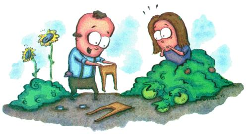

Discretion is the better part of pest control
My neighbor Ernold walked across the front porch carrying a pair of panty hose and scissors. I looked at his maiden sister Wilmyrt', sitting across from me sipping iced tea. I raised an eyebrow in question.
She shrugged and shook her head.
The way he looked carrying those shriveled little tan legs reminded me of Wendy in Peter Pan. "Hey Ern, you gonna sew someone's shadow hack on?"
"Those better not he my new L'Eggs," Wilmyrt warned.
Ernold hunched his shoulders and kept marching. He was in a war against pests and had no time for banter. Besides, he was used to getting grief about all his home-style remedies against cutworms and slugs and earwigs and grubs.
"He's obsessed," I remarked.
"You're telling me?" his sister replied. "Every waking moment he's out there keeping the garden safe from anything that walks, crawls or flies. But he never sees the garden, the flowers, the vegeta bles. He only sees the insects and the holes they leave behind." I liked Wilmyrt. More than she seemed to notice.
"You know," Wilmyrt said, "if I believed in reincarnation, I would bet that Ernold was a bat in a former life. He just loves to zap insects. And in his next life he'll be a praying mantis."
See what I mean about her? She's my kind of practical, no-nonsense woman.
Take the time she lost track of Ernold in the tomato patch. Seems he was chewing a huge cud of Red Man tobac co, working up juicy splats to dribble on tomato hugs. Trouble is he got so green in the process that he blended right in with the plants. It wasn't until he started waving his arms like a runaway windmill that Wilmyrt spotted him and realized he was choking. She gave him the Heinrich maneuver (a prototype version of the Heimlich maneuver in which the older brother knee-dropped on the kidneys of his now famous younger brother). The resulting explosion eliminated tomato hugs for the rest of the season. Of course, the rest of us suffered from sec ondhand nicotine ingestion every time we ate raw tomatoes.
Wilnryrt grabbed my arm and practical ly dragged me off the porch. "C'mon," she said. "Let's see what he's up to this time."
She interrupted my thoughts by plucking a rose growing next to the path, holding it up to her nose for a quick sniff, smiling and offering it to me. I couldn't help spotting a Japanese beetle finishing his lunch on one of the petals. I pretended not to notice.
I almost lost the rose as I fell to one knee, my toe jammed in a yogurt cup half-buried in the ground. I smelled stale beer.
"Oh, I should have warned you about the slug traps. Ernold fills them with beer."
"So they fall in and drown. Well," I said, "at least they get to die happy."
Wilmyrt smiled for a moment. But that quickly changed when she saw her broth er cutting the legs off her panty hose.
"What in heaven's name do you think you are doing with my good nylons?"
Ernold stood up. Blinked. Startled by the noisy intrusion. He looked from his sister to the truncated panty hose in his hand. "Uhmmm," he stalled, looking to me for salvation or at least inspiration. I slowly shook my head.
"Uhmm," he con tinued, studying the hoseless panties. "These are cut-offs," lie declared, nod ding his head in approval. Picking up steam along his new train of thought, he added, "You can wear these under your cut-off jeans and no one will ever know."
Wilmyrt stamped her foot.
"Why are you doing this?" I asked as Ernold slid one of the panty-less legs over a green cantaloupe. "Is this the lat est fashion in melon wear?"
Securing the nylon with a twist tie, Ernold explained, "They keep the grasshoppers from eating the cantaloupe. That's a small price to pay for perfection."
Wilmyrt snatched the rose from my hand, walked up to her brother and thrust it under his nose. "Smell this!" she demanded.
Ernold wrenched his head hack. Flicked at the still-lunching beetle. "Ruined the flower. Absolutely ruined it," lie groaned. "Where's my Malathion?"
"ERNOLD!" Wilnryrt shouted. "We're all flawed. Learn to live with it."
Ernold flinched like a slug that just had salt sprinkled on its tail.
"I'm not perfect," his sister continued. "You're not perfect. And your buddy here sure as hell isn't perfect."
I reluctantly agreed with her.
"If you're so bound and determined to rid the world of pests," Wilnryrt added, pointing her chin toward me, "why don't you start by getting rid of this creep?"
I cringed, but then spotted Wilnryrt giving me a big wink as she sashayed back to the house.
See what I mean by an intriguing woman?
|
 Photo: CHARLES STUBBS |
|
|